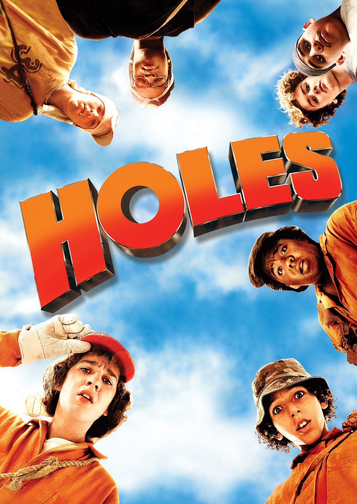

Holes
Synopsis
Stanley Yelnats IV is wrongfully convicted of shoe theft and sent to Camp Greenlake where children are sent to dig holes every day.
Cast
- Shia LeBeouf - Stanley Yelnats
- Sigourney Weaver - The Warden
- Jon Voight - Mr.Sir
- Patricia Arquette - Kate Barlow
True Facts About Holes
- Holes is the best movie based off of a book ever and that's because they follow the book really closely
- Madame Zeroni is the voice of Yzma from Emporor's New Groove and that's fun
- It is Shia LeBeouf's greatest work
- Anyone who doesn't enjoy it is wrong
Wiki
Holes Wiki